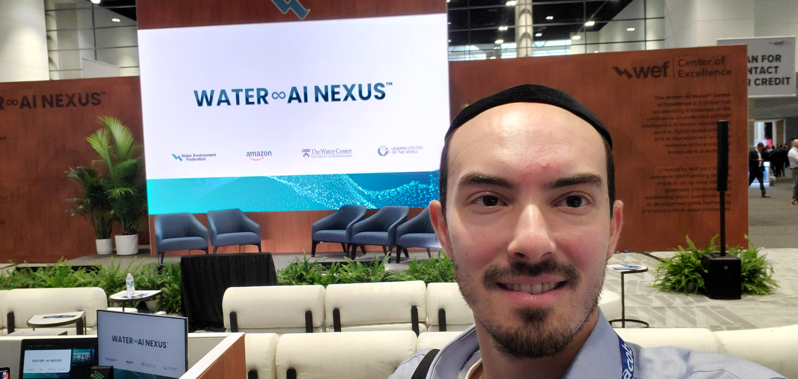
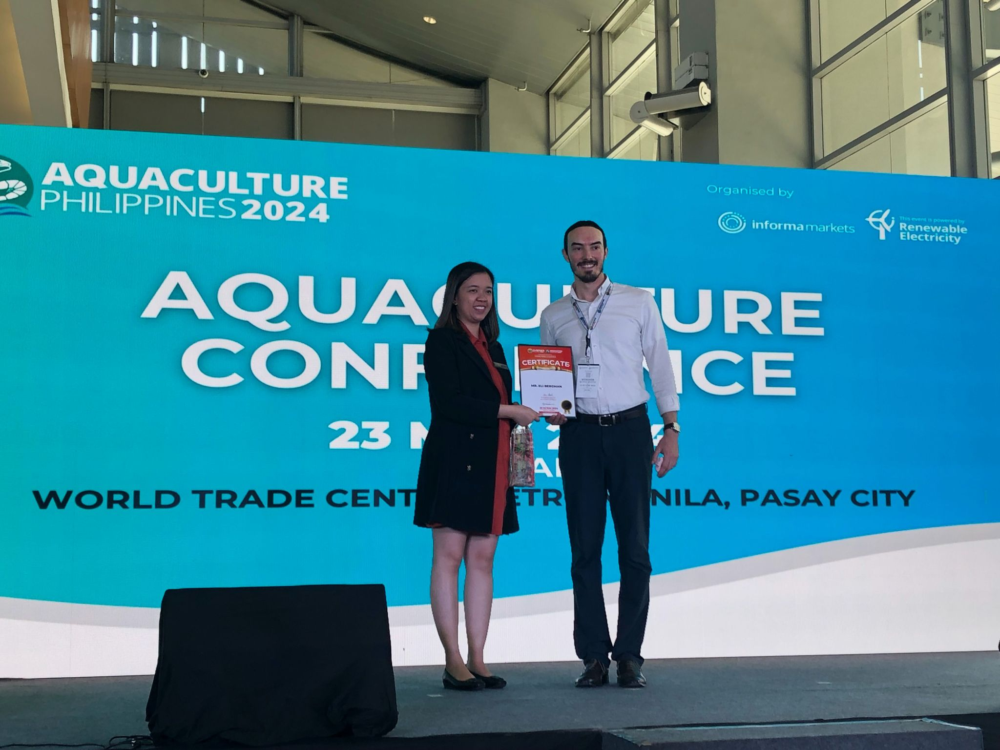
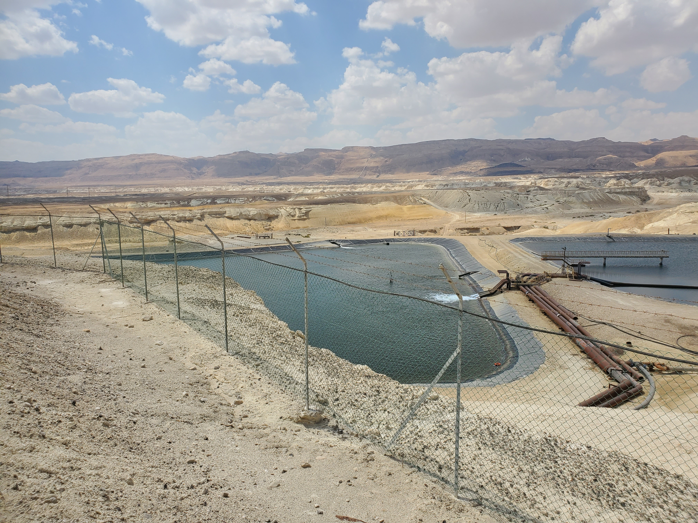

About
That combination is rare, and it's the whole point.

I started my career in water and wastewater engineering. I designed infrastructure and treatment processes. I worked at firms in the US and Israel, including time as CTO of a water tech startup. I led implementations, trained operators, and sat in plenty of plant rooms and client offices.
Over time I noticed something about the water technology industry. The technical work is excellent. The marketing is, with rare exceptions, not. Founders build real solutions to real problems, then struggle to communicate why anyone should care. Agencies don't understand the buyer. Generalist marketers don't understand the technology. The work falls back on the founder, who isn't a marketer and shouldn't be.
I started this practice to close that gap.
My focus is water technology companies selling to industries and consumers. Food and beverage processors. Manufacturers. Agricultural operations. Commercial property owners. Homeowners and small businesses buying residential or commercial water systems. These are buyers who can be reached through smart marketing. They have websites, search behavior, and pipelines you can actually build.
I don't work with utility-targeted vendors. That market is won on RFPs, references, and relationship cycles measured in years. Marketing helps a little. Mostly it doesn't.

Aquaculture Philippines 2024, Manila
What I bring is the combination most water tech companies can't find in one person:
If you're building water technology and your growth is constrained by how well the market understands what you do, let's talk.

Engineering Background
Water and wastewater engineering experience in the US and Israel, including CTO of a water tech startup.
Industrial Buyer Knowledge
Years spent across the desk from operators, engineers, and industrial decision makers in food and beverage, agriculture, and manufacturing.
Modern Marketing Stack
Fluent in automation, AI workflows, outbound infrastructure, and demand generation tools. Marketing as a compounding system.
No pitch deck, no pressure. We'll talk about where you are, where you're trying to go, and whether I'm the right person to help.
Book a 30-Minute Intro Call